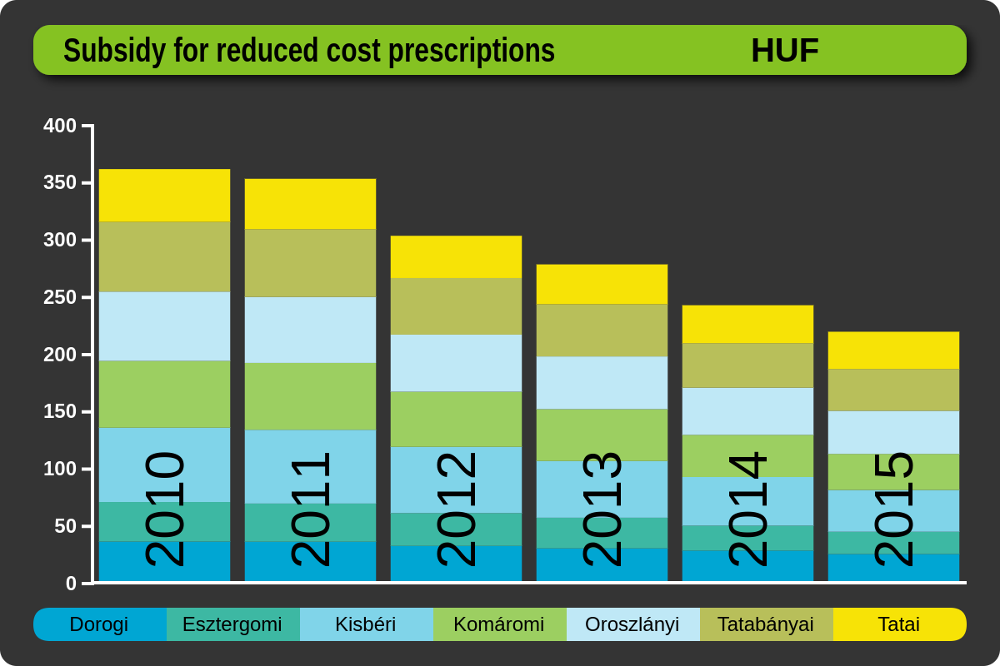
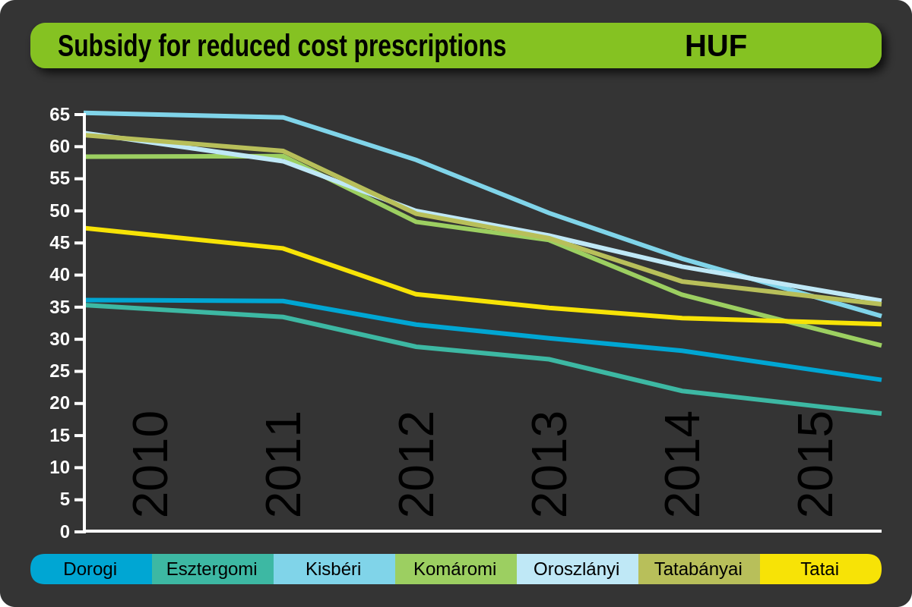

Egy jelentés néhány dimenzió szerint bontott mutatókat tartalmaz. Minden mutatót kétféleképp ábrázolhatunk, vizsgálhatjuk magának a mutatott mennyiségnek az értékét, illetve valamely más értékhez viszonyított arányosított értékét.
A mutatók értékeit panelek segítségével vizsgálhatjuk. Minden panel egy vagy több értéket mutat, egy vagy több dimenzió szerinti felbontásban.
Egy térképpanel valamely mutató területi dimenzió szerinti felbontását mutatja, egy oszlopdiagram akár több értéket, tetszőleges dimenzió szerint felbontva ábrázol.
Egy panelen egy dimenzióelemre kattintás az adott elemre való lefúrást eredményez. Ez után az összes panel által mutatott érték már csak az adott dimenzióelemre vonatkozik. Egy dimenzió mentén való felfúrást a dimenziót bontó panel hátterére való kattintással kezdeményezhetünk.
Ha egy térképpanelen Heves megyére kattintunk, akkor minden panel a Heves megyei adatokat mutatja, a térképpanel pedig Heves megyét bontja tovább kistérségekre. Ez után, ha egy nem dimenziót ábrázoló oszlopdiagram panelen a Férfi oszlopra kattintunk, akkor minden panelen már csak a Heves megyei férfiakra vonatkozó adat lesz látható.
A 2 dimenziós oszlopdiagram és a 2 dimenziós táblázat több dimenziót ábrázol. Ekkor, a megfelelő dimenzióelemre katintással bármely dimenzióban kezdeményezhető lefúrás, illetve a dimenzió mellé kattintva felfúrás is.
Ha egy panel által megjelenített értékre állítjuk az egeret, akkor a kb. 1 másodperc múlva felbukkanó buborékban a kijelzett mennyiség pontos értékét is láthatjuk.
Egy jelentés oldalán két fajta panel látható. A legfelső panel a fejpanel, amelyen a jelentés dimenziói és mutatói láthatóak. A többi panel mindegyike 1 vagy több mutató értékét mutatja, 1 vagy több dimenzió szerint alábontva. Ezen paneleken az ábrázolt mutatók és az alábontott dimenziók állíthatóak, módosíthatóak.
A mutatók módosítására három lehetőségünk van.
Egy panel érték / arányosított érték kijelzés közötti váltását kétféleképp tehetjük meg.
Egy panel dimenziójának módosítását a dimenzió fejpanelről történő áthúzásával valósíthatjuk meg. Bizonyos panelek több dimenziót is alábontanak, ezek külön-külön a panel megfelelő helyére ejtéssel módosíthatóak. Térképpanelre pedig csak területi dimenziót dobhatunk.
Vonal- vagy oszlopdiagramot tartalmazó panelen egyszerre több mutatót is megjeleníthetünk. Ha azonban bizonyos megjelenítendő mutatóknak az értéke, más mutatóknak pedig az arányosított értéke nem értelmezett, akkor a panel nem képes a kért mutatók együttes megjelenítésére. Ekkor a panel egy nagy ?-et tartalmaz csak, de egy új mutató fejlécre való ejtésével visszaállítható a normális működés.
A panelek sorrendje a panelek megragadásával, (húzd és ejtsd) majd a kívánt helyre húzásával módosítható.
A panel jobb alsó sarkában látható vonalkázott hárömszöggel egy kiválasztott panel felnagyítható. A nagyított panel nem csak a méretében lesz nagyobb, hanem részletgazdagabban mutatja a rajta ábrázolt diagramot.
A jelentés tetején található panel a fejpanel. Nem törölhető, nem is lehet újat létrehozni belőle. Célja kettős:
Más panel dimenziójának megváltoztatásához a fejpanel megfelelő dimenzióját kell egérrel megragadni, majd a célpanel megfelelő részére ejteni.
Egy mutatóra kattintva az összes panel az adott mutató ábrázolására vált. Ha a mutatóra az arányosított érték oszlopban kattintunk, akkor a panelek az arányosított értéket fogják mutatni, különben a mutató normál értékét. Ha csak egy panel mutatóját akarjuk megváltoztatni, vagy egy panelhez újabb mutatót hozzáadni, azt a fejpanel megfelelő mutatójának megragadásával, és a panel fejlécére, vagy megfelelő helyére ejtésével tehetjük.
Ha egy jelentés sok dimenziót vagy mutatót tartalmaz, előfordulhat, hogy a fejpanelbe nem fér bele az összes egyszerre. Ekkor a dimenziók vagy mutatók táblázata mellett megjelenő görgetősávval tallózhatunk közöttük. Ha egy dimenzió vagy mutató neve olyan hosszú, hogy nem fér el a rendelkezésre álló helyen (...-ra végződik), akkor az egérrel rámutatva a kb. 1 másodperc múlva megjelenő buborékban megjelenik a pontos név.
A kördiagrammal tetszőleges mutatót, tetszőleges dimenzió szerint bontva ábrázolhatunk. A kördiagram cikkelyei az adott dimenzió elemeit jelképezik, méretük a mutató értékével arányos. A cikkelyek mellett a dimenzióelem neve, és a mutató értékének a teljesből kitöltött százalékos aránya szerepel. Az egeret a körcikk fölé mozgatva a felbukkanó buborékban leolvasható a mutató pontos értéke is.
Ahol kis körcikkek sűrűn egymás mellé torlódnak, ott az olvashatóság megőrzése érdekében a körcik melletti felirat hiányzik. Az egérmutatót a körcikk fölé mozgatva a megjelenő buborékban ekkor is leolvasható a dimenzióelem neve, és a mutató hozzá tartozó értéke.
Egy dimenzióelemre való lefúrást a dimenzióelemhez tartozó körcikkre való kattintással kezdeményezhetünk, felfúrást a panel hátterére kattintva.
A kördiagram által bontott dimenziót a fejpanelen található dimenziók egyikének panelre dobásával változtathatjuk meg.
Más mutató ábrázolását a fejpanelen található mutatóra kattintással (ekkor az összes panel erre a mutatóra vált),
a kiválasztott mutatónak a kördiagram fejlécére húzásával, vagy a kördiagram fejlécén a mutatóra
kattintással kezdeményezhetjük.
Az érték / arányosított érték kijelzés között a fejlécen
található mértékegységre kattintással, vagy a fejpanelen a megfelelő mutató arányosított érték
oszlopába katintással válthatunk (ekkor az összes panel vált).
Oszlopdiagrammal 1 vagy több mutatót tetszőleges dimenzió szerinti bontásban ábrázolhatunk. Az oszlopdiagram lehet hagyományos vagy széthúzott, amelyben minden oszlop azonos magasságúra van széthúzva. A hagyományos oszlopdiagramhoz vonaldiagramokat is hozzáadhatunk.
Az egérmutatót egy oszlop fölé húzva megjelenik az oszlop által szemléltetett dimenzióelem neve, és a mutatók értékei. Ha az oszlopok olyan sűrűek, hogy a dimenzióelemek nevei nem férnének ki rá, a név így mindenképp megnézhető.
Egy dimenzióelemre való lefúrást a dimenzióelemhez tartozó oszlopra kattintással kezdeményezhetünk, felfúrást a panel hátterére kattintva.
Az oszlopdiagram által bontott dimenziót a fejpanelen található dimenziók egyikének panelre dobásával változtathatjuk meg.
Ha a diagram csak egy mutatót ábrázol, akkor ennek lecserélését
a fejpanelen található mutatóra kattintással (ekkor az összes panel erre a mutatóra vált),
a kiválasztott mutatónak fejpanelről az oszlopdiagram fejlécére húzásával, vagy a diagram fejlécén a mutatóra
kattintással végezhetjük.
Több mutatót együttes ábrázolását csak a mutatónak a fejpanelről való áthúzásával kezdeményezhetjük. Ha az új mutatót a panel alsó felére
dobjuk, az oszlopdiagramként, ha a felsőre, akkor vonaldiagramként kerül az ábrára. Ha a mutatót
a panel fejlécére dobjuk, akkor csak ezt az egyetlen mutatót fogjuk látni.
Több mutató oszlopdiagramon való együttes ábrázolásakor a mutatók egymás fölé kerülnek,
azaz halmozott oszlopdiagramként jelennek meg. Ugyanaz a muatató több példányban
(pl. oszlopdiagramként és vonaldiagramként) egyszerre nem jeleníthető meg.
Az érték / arányosított érték kijelzés között a fejlécen
található mértékegységre kattintással válthatunk.
Ha az egyik megjelenítendő mutatóknak az értéke, más mutatónak pedig az arányosított értéke
nem értelmezett, akkor a panel nem képes a kért mutatók együttes megjelenítésére.
Ekkor a panel egy nagy ?-et tartalmaz csak, de egy új mutató fejlécre való
ejtésével visszaállítható a normális működés.
Ha a panelen egyszerre több olyan mutatót jelenítünk meg, amelyek értékkészlete más
nagyságrendű (pl. millió forint és doboz gyógyszer), akkor az egyik mutató - mivel értéke
nagyságrendekkel kisebb mint a másik - úgy tűnhet, mintha ott se lenne.
Több mutató ábrázolásakor a panel alsó részén megjelenik a jelkulcs. Egy jelkulcselemre katintással megjeleníthetjük/eltüntethetjük az adott mennyiség átlagos értékét, átlagvonalként ábrázolva.
Széthúzott oszlopdiagramnak csak akkor van értelme, ha egyszerre több mutatót ábrázol. Széthúzott oszlopdiagramra nem tehetünk vonaldiagramként további mutatókat.
Vonaldiagrammal 1 vagy több mutatót tetszőleges dimenzió szerinti bontásban ábrázolhatunk. A vonaldiagrammal egy értéket ábrázolhatunk hagyományosan törtvonallal, de tehetünk rá jelölőket is. A vonaldiagramhoz oszlopdiagramokat is hozzáadhatunk.
Az egérmutatót egy jelölő, vagy a vonal és egy dimenzióelem képzeletbeli metszéspontja fölé húzva megjelenik az oszlop által szemléltetett dimenzióelem neve, és a mutatók értékei. Ha a dimenzió elemei olyan sűrűek, hogy a nevük nem férnének ki, a név így mindenképp megnézhető.
Egy dimenzióelemre való lefúrást a dimenzióelemhez tartozó jelölőre, vagy a dimenzióelemre való kattintással kezdeményezhetünk, felfúrást a panel hátterére kattintva.
Az vonaldiagram által bontott dimenziót a fejpanelen található dimenziók egyikének panelre dobásával változtathatjuk meg.
Ha a diagram csak egy mutatót ábrázol, akkor ennek lecserélését
a fejpanelen található mutatóra kattintással (ekkor az összes panel erre a mutatóra vált),
a kiválasztott mutatónak fejpanelről a vonaldiagram fejlécére húzásával, vagy a diagram fejlécén a mutatóra
kattintással végezhetjük.
Több mutatót együttes ábrázolását csak a mutatónak a fejpanelről való áthúzásával kezdeményezhetjük. Ha az új mutatót a panel alsó felére
dobjuk, az oszlopdiagramként, ha a felsőre, akkor vonaldiagramként kerül az ábrára. Ha a mutatót
a panel fejlécére dobjuk, akkor csak ezt az egyetlen mutatót fogjuk látni.
Több mutató oszlopdiagramon való együttes ábrázolásakor a mutatók egymás fölé kerülnek,
azaz halmozott oszlopdiagramként jelennek meg. Ugyanaz a muatató több példányban
(pl. oszlopdiagramként és vonaldiagramként) egyszerre nem jeleníthető meg.
Az érték / arányosított érték kijelzés között a fejlécen
található mértékegységre kattintással válthatunk.
Ha az egyik megjelenítendő mutatóknak az értéke, más mutatónak pedig az arányosított értéke
nem értelmezett, akkor a panel nem képes a kért mutatók együttes megjelenítésére.
Ekkor a panel egy nagy ?-et tartalmaz csak, de egy új mutató fejlécre való
ejtésével visszaállítható a normális működés.
Ha a panelen egyszerre több olyan mutatót jelenítünk meg, amelyek értékkészlete más
nagyságrendű (pl. millió forint és doboz gyógyszer), akkor az egyik mutató - mivel értéke
nagyságrendekkel kisebb mint a másik - úgy tűnhet, mintha ott se lenne.
Több mutató ábrázolásakor a panel alsó részén megjelenik a jelkulcs. Egy jelkulcselemre katintással megjeleníthetjük/eltüntethetjük az adott mennyiség átlagos értékét, átlagvonalként ábrázolva.
A térképpel egy tetszőleges mutatót területi dimenzió szerint bontva ábrázolhatunk.
A térképen a pillanatnyi lefúrási szintnek megfelelő terület látható, az ábrázolt mutató
értéke szerinti színárnyalattal színezve (területi kartogram).
A különböző színértékekhez tartozó érték a térkép alatti jelkulcsról
olvasható le. Az egeret egy terület fölé mozgatva a felbukkanó buborékban leolvasható a
mutató pontos értéke is.
Ha a jelentés POI-kat (érdekes helyszínek) tartalmaz, ezek is megjeleníthetőek.
Egy területre való lefúrást a területre való kattintással kezdeményezhetünk, felfúrást a panel hátterére kattintva.
A térkép által ábrázolt dimenziót egy másik területi dimenzióra a fejpanelen található dimenziók egyikének panelre dobásával változtathatjuk meg.
Ha térképpanelre nem területi dimenzió dobunk - mivel annak megjelenítése a térképen nem lehetséges - nem történik semmi változás.
Más mutató ábrázolását a fejpanelen található mutatóra kattintással (ekkor az összes panel erre a mutatóra vált),
a kiválasztott mutatónak a térképpanel fejlécére húzásával, vagy a térképpanel fejlécén a mutatóra
kattintással kezdeményezhetjük.
Az érték / arányosított érték kijelzés között a fejlécen
található mértékegységre kattintással, vagy a fejpanelen a megfelelő mutató arányosított érték
oszlopába katintással válthatunk (ekkor az összes panel vált).
Ha a jelentés érdekes pontokat (POI-kat) tartalmaz, a panel jobb alsó
sarkában megjelenő POI-jelkulccson ki/be kapcsolható ezek megjelenése.
Ha a jelentésnek egyáltalán nincs területi dimenziója, akkor a az Új menü térképpanel gombja inaktív.
A 2 dimenziós oszlopdiagram az egyik dimenzió értékeit különböző oszlopokkal, a másik
dimenzió értékeit az oszlopokon belüli megosztással szemlélteti. E második dimenzió értékei
a jelkulcsról olvashatóak le.
A diagram lehet hagyományos vagy széthúzott, amelyben minden oszlop azonos
magasságúra van széthúzva.
 A példán egy mutató évenkénti megoszlását különböző oszlopok, területi megoszlását oszlopokon belüli színek szemléltetik. A mutató adott (év, hely) páron felvett értéke az oszlopelem magasságával arányos.
Az egérmutatót egy oszlop fölé húzva megjelenik az oszlop által szemléltetett dimenzióelem neve, és a mutatók értékei. Ha az oszlopok olyan sűrűek, hogy a dimenzióelemek nevei nem férnének ki rá, így olvashatjuk le őket. Az egérmutatót a jelkulcs fölé húzva a jelkulcs dimenzióelemének a neve jelenik meg. Ha a jelkulcs olyan sűrű, hogy a dimenzióelemek nevei nem láthatóak, akkor így nézhetjük meg őket.
Az oszlopokon ábrázolt dimenzió egy elemére való lefúrást az oszlopra való kattintással
kezdeményezhetünk, felfúrást a panel hátterének a vízszintes tengely fölötti részére kattintva.
A jelkulcson ábrázolt dimenzióban való lefúrást a jelkulcs egyik elemére
kattintással, felfúrást a panel hátterének vízszintes tengely alatti részére kattintással végezhetünk.
A diagram által bontott dimenziót a fejpanelen található dimenziók egyikének panelre dobásával változtathatjuk meg. Ha a dimenziót a vízszintes tengely fölötti részre ejtjük, akkor az oszlopokkal ábrázolt dimenzió változik meg, ha a vízszintes tengely alá ejtünk, akkor a jelkulcsé.
Más mutató ábrázolását a fejpanelen található mutatóra kattintással (ekkor az összes panel erre a mutatóra vált),
a kiválasztott mutatónak a diagram fejlécére húzásával, vagy a diagram fejlécén a mutatóra
kattintással kezdeményezhetjük.
Az érték / arányosított érték kijelzés között a fejlécen
található mértékegységre kattintással, vagy a fejpanelen a megfelelő mutató arányosított érték
oszlopába katintással válthatunk (ekkor az összes panel vált).
Vízszintes olszopdiagrammal - hasonlóan az oszlopdiagramhoz - 1 vagy több mutatót ábrázolhatunk, tetszőleges dimenzió szerinti bontásban. Azonban, ellentétben az oszlopdiagrammal, itt lehetőség van bizonyos mutatókat pozitív, bizonyosakat negatív irányban ábrázolni. A vízszintes oszlopdiagram lehet hagyományos vagy centrált, amelyben a diagram pozitív és negatív része azonos szélességű.
Az egérmutatót egy oszlop fölé húzva megjelenik az oszlop által szemléltetett dimenzióelem neve, és a mutatók értékei. Ha az oszlopok olyan sűrűek, hogy a dimenzióelemek nevei nem férnének ki rá, a név így mindenképp megnézhető.
Egy dimenzióelemre való lefúrást a dimenzióelemhez tartozó oszlopra kattintással kezdeményezhetünk, felfúrást a panel hátterére kattintva.
Az oszlopdiagram által bontott dimenziót a fejpanelen található dimenziók egyikének panelre dobásával változtathatjuk meg.
Ha a diagram csak egy mutatót ábrázol, akkor ennek lecserélését
a fejpanelen található mutatóra kattintással (ekkor az összes panel erre a mutatóra vált),
a kiválasztott mutatónak fejpanelről az oszlopdiagram fejlécére húzásával, vagy a diagram fejlécén a mutatóra
kattintással végezhetjük.
Több mutatót együttes ábrázolását csak a mutatónak a fejpanelről való áthúzásával kezdeményezhetjük.
Ha az új mutatót a függőleges tengelytől balra, akkor negatív, ha jobbra, akkor pozitív irányban
kerül ábrázolásra.
Ha a mutatót
a panel fejlécére dobjuk, akkor csak ezt az egyetlen mutatót fogjuk látni.
Több mutató oszlopdiagramon való együttes ábrázolásakor a mutatók egymás mellé kerülnek,
azaz halmozott oszlopdiagramként jelennek meg. Ugyanaz a muatató több példányban
(pl. pozitív és negatív irányban) egyszerre nem jeleníthető meg.
Az érték / arányosított érték kijelzés között a fejlécen
található mértékegységre kattintással válthatunk.
Ha az egyik megjelenítendő mutatóknak az értéke, más mutatónak pedig az arányosított értéke
nem értelmezett, akkor a panel nem képes a kért mutatók együttes megjelenítésére.
Ekkor a panel egy nagy ?-et tartalmaz csak, de egy új mutató fejlécre való
ejtésével visszaállítható a normális működés.
Ha a panelen egyszerre több olyan mutatót jelenítünk meg, amelyek értékkészlete más
nagyságrendű (pl. millió forint és doboz gyógyszer), akkor az egyik mutató - mivel értéke
nagyságrendekkel kisebb mint a másik - úgy tűnhet, mintha ott se lenne.
Több mutató ábrázolásakor a panel alsó részén megjelenik a jelkulcs.
Az 1 dimenziós táblázattal egyszerre az összes mutatót vizsgálhatjuk tetszőleges
dimenzió szerinti bontásban. Ekkor a táblázat sorai a felbontott dimenzió elemeit
tartalmazzák, az oszlopok pedig a mutatókat.
2 dimenziós táblázattal csak egy mutatót vizsgálhatunk, de két dimenzió szerint
bontva. A két dimenzió egyike a sorokban, a másik az oszlopokban szerepel.
Az egérmutatóval a táblázatok sor- vagy oszlop-fejlécére, illetve valamely cellára mutatva a megjelenik a dimenzióelem vagy mutató neve, illetve a mutató értéke.
Egy dimenzióelemre való lefúrást a dimenzióelemhez tartozó sor- vagy oszlop-fejlécre kattintással kezdeményezhetünk, felfúrást a panel hátterére kattintva. A 2 dimenziós táblázatban a sorokat alkotó dimenzióban való felfúrást a panel hátterének sor-fejléceket tartalmazó bal oldali részére, az oszlop-dimenzióban felfúrást a maradék részére kattintás indít.
A táblázat által bontott dimenziót a fejpanelen található dimenziók egyikének panelre dobásával változtathatjuk meg. A 2 dimenziós táblázatban a felfúráshoz hasonlóan a megfelelő részre dobás cseréli le a sorok, illetve oszlopok dimenzióját.
Az 1 dimenziós táblázat automatikusan tartalmazza az összes mutatót.
A 2 dimenziós esetben más mutató ábrázolását a fejpanelen található mutatóra kattintással (ekkor az összes panel erre a mutatóra vált),
a kiválasztott mutatónak a panel fejlécére húzásával, vagy a panel fejlécén a mutatóra
kattintással kezdeményezhetjük.
Az érték / arányosított érték kijelzés között a fejlécen
található mértékegységre kattintással, vagy a fejpanelen a megfelelő mutató arányosított érték
oszlopába katintással válthatunk (ekkor az összes panel vált).
Ha a táblázatban az oszlopok vagy sorok nem férnének ki a panelre, alul, illetve a jobb oldalon gördítősávok jelennek meg.
A report contains some indicators broken down by dimensions. Each indicator can be represented in two ways, we can examine the value of the displayed indicator or proportional to another value.
The values of the indicators can be examined by means of panels. Each panel displays one or more values broken down by one or more dimensions.
A map chart can show an indicator broken down by a territorial dimension, a bar chart illustrates one or more indicators, broken by an arbitrary dimension.
In a panel, click on a dimension element to initiate drilling down to that. After this, the value shown by all panels applies only to the given dimension element. You can initiate a drilling up along a dimension by clicking on the background of the panel.
If you click on a map chart on a county, each panel shows data on that county, and the map chart will further break down the county into subregions. Then, if you click on the men's column in a bar chart panel, then you will see only data for men in that county on each panel.
The 2-dimensional bar chart and the 2-dimensional line chart can show an indicator broken down by two dimensions. On that panels you can drill down in any dimension by clicking on the given dimension element, and drill up in the given dimension with a click on the background near the dimension.
There are two types of panels on a report page. The top panel is the header that shows the dimensions and indicators of the report. Each of the other panels shows one or more indicators broken down by one or more dimensions. In these panels, the indicators and dimensions can be adjusted and modified.
There are three options for changing the indicators.
There are two ways to switch between value and proportional value display on a panel.
You can modify the dimension on a panel by dragging a dimension from the top panel. Certain panels show more than one dimension, which can be individually modified by dropping the dimension to the desired place. One can only drop a territorial dimension to a map chart.
You can display multiple indicators at the same time on a line or bar chart. However, if the value or the proportional value of certain indicators is not interpreted, then the panel can not display the requested data together. In this case the panel shows a large question mark, but by dropping a new indicator to the header normal operation can be restored.
You can change the order of the panels by dragging them to the desired location.
You can double the size of a panel by clicking at the lower right corner of it. The magnified panel will not only be bigger in size, but will also show more details.
The panel at the top of the report is the top panel. Cannot be deleted. It has dual purpose:
If a report contains many dimensions or indicators, it may not fit all in the header at once. In that case use the scrollbars to browse through them. If the name of a dimension or indicator is too long (ends with ...), hovering the mouse over them will show the exact name in a tool tip.
On a bar chart 1 or more indicators can be shown by an arbitrary dimension. The chart can be either conventional or stretched, in which each column is stretched to the same height. You can even add line diagram elements to a conventional bar graph.
More than one indicator can only be shown by dragging and dropping an indicator from the top panel. If you drop the indicator to the lower half of the panel it is shown as a bar graph, if you drop it to the upper half it will be a line diagram. If you drag and drop an indicator to the header of the panel, you will only see this single indicator. When you add multiple indicators as bars to the chart, the values are superimposed, so they are displayed as a stacked bar graph.
When showing more than one indicator, a legend on the bottom of the panel is displayed. You can click on a legend entry to show/hide the average value of a given indicator as an average line.
On a line chart 1 or more indicator can be shown by an arbitrary dimension. The line chart can be drawn as conventional broken line, but you can also use markers to mark the actual data points. Bar graphs can also be added to the line diagram.
You can control the line chart (chose a new dimension, add indicators, use the legend) like it is explained in the bar chart entry.
An arbitrary indicator can be displayed by a territorial dimension with the map chart. The area corresponding to the current drilling level on the map is colored to show the value of the displayed indicator. The value for the different color values can be read from the legend below the map. If the report contains POIs (point of interests), you can switch them on and off by clicking on the legend.
If you drop a non territorial dimension to the map chart - as its display on the map is not possible - nothing happens.
If the report does not have a territorial dimension at all, then the map button on the New panel menu is inactive.
The 2-dimensional bar chart shows the values of one dimension with different columns,
the values of the other dimension as different sections of the columns.
The values of this second dimension can be read from the legend.
The chart can be either conventional or stretched, in which each column is stretched to
the same height.
In the example you can see an indicator's annual distribution as different columns, the territorial distribution as sections within the columns. The value of the indicator in a given (year, position) pair is proportional to the height of the column element.
A drill-down in the column-dimension can be started by clicking on the column, a drill-up by clicking on the panel's background over the horizontal axis. Drilling in the other dimension is done by clicking on one of the elements of the legend, or on the panel's background underneath the horizontal axis.
You can change a dimension of the 2-dimensional chart by dropping an of the dimensions from the top panel to the panel. If the dimension is dropped above the horizontal axis the dimension represented by the columns will change, if it is dropped below the horizontal axis the legend's dimension will change.
The 2-dimensional line chart is similar to the 2-dimensional bar chart, but the values broken by the legend's dimension are not shown as stacked columns but as separate lines.
 This example shows the same data as the previous, but on a 2-dimensional line chart.
The horizontal bar chart is similar to the vertical bar chart, however, in contrast, you can show certain indicators as positive, some as negative ones. A horizontal bar graph can be either conventional or centered, with the positive and negative parts of the diagram being of the same width.
Dropping an indicator from the top panel to the left of the vertical axis shows the values in the negative, dropping it to the right of the vertical axis shows it in the positive direction. An indicator can not be displayed multiple times (e.g. in positive and negative directions) at the same time.
When showing more than one indicator, a legend on the bottom of the panel appears.
You can see all indicators at once with the 1-dimensional table
broken by an arbitrary dimension. In this panel the rows of the table
contain the elements of the opened dimension, and the columns show the indicators.
A 2-dimensional table can only show one indicator, but broken down into two dimensions.
One of the two dimensions is in the rows, the other is in the columns.
A drill-down can be started by clicking on the row or column header for the dimension element, a drill-up by clicking un the panel background near it.
You can change the dimension of a table by dragging and dropping a dimension from the top panel. In the 2-dimensional table, you can replace one dimension or another by dropping the dimension into the right place.